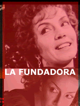

Encontranos también en
|
QUE ES ANDAMIO 90? COLEGIO SUPERIOR DE ARTES DEL TEATRO Y LA COMUNICACION Instituto Privado Incorporado a la Enseñanza Oficial A-1302 Somos una Institución de nivel terciario, que fomentamos la Educación integrando valores sociales y culturales mediante: La formación académica, humanística y científica. La investigación, la docencia, la enseñanza y el desarrollo de las artes y las ciencias. La excelencia educativa como meta compartida por la Comunidad Académica. La formación ética, moral y solidaria que respalden y distingan su desempeño humano profesional. La formación de profesionales capacitados para establecer la integración entre Comunicación, Imagen y Organización. ¿Quiénes nos presiden y avalan? Nos destaca la actividad Educativa que originalmente desarrolló Alejandra Boero, nuestra Fundadora, con toda una vida dentro del ámbito teatral y cultural y casi 60 años dedicada a la representación y dirección teatral, Avalado esto además por su prestigio y dedicación, han hecho posible que el Espacio Cultural Andamio´90, ya hayan cumplido 17 años de vida, transitando los caminos del Arte con mayúsculas. El rector del Colegio Superior de Artes del Teatro y la Comunicación, el licenciado Alejandro Samek, lleva casi 40 años dedicado al campo de las artes y esa sólida expreriencia se ve refljada en las carreras y los contenidos, que ha sido diseñado, y han sido aprobadas oficialmente en su totalidad. ALEJANDRA BOERO - Ver CV ALEJANDRO SAMEK - Ver CV |
RESERVAS AL 4373-5670
 |
||
| Andamio 90 - Parana 662 p.1 - CABA - Telefonos 4374-1484 / 4372-8386 | ||||